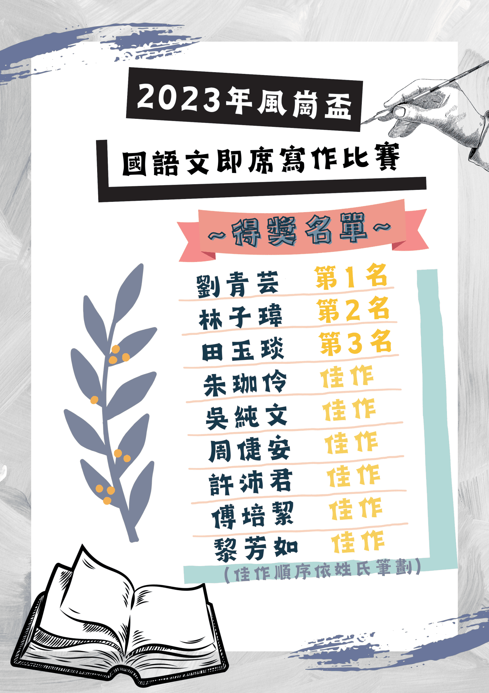

關於我
吳純文
學歷：私立中原大學資訊管理學系就讀
生日：2005/06/12
#挑戰新事物 #永不放棄 #行政文書人 #活潑開朗 #熱心服務
您好，我是吳純文，目前就讀中原大學，是一位大二生，主修資訊管理學系，對我來說，挑戰不一樣的事物，是我的目標，讓自己嘗試不一樣的工作，學會各種工作所需的工作技巧，增強自己的工作經歷之外，也可以讓自己不斷的突破自我，勇於嘗試不同的事物。
我擁有豐富的工作經歷，在職場上，有厚實的行政能力，有系統性的解決問題能力，有思緒性的溝通能力，讓我在工作中，可以盡情的發揮我的專長，做到「認真」、「勤奮」、「努力」三大目標，成為自己最佳的榜樣。
在工作經歷當中，有一般性的公司、教育部計劃案、公部門相關經歷，對於我來說，讓自己在不同的工作領域中，奠定未來在職場上，所需具備的相關能力，不害怕失敗，不害怕挫折，不畏懼，都是我在工作中，不可或缺的三大元素，而我也一直在工作中學習與人共事，掌握溝通技巧，凝聚共同目標，達成有效的訊息傳遞。
各項技能
檢定證照能力
文書處理能力
90%
管理能力
75%
會計事務能力
80%
與資管相關的專業能力
Word
90%
Excel
90%
PowerPoint
90%
AI人工智慧
80%
個人專長
程式語言
80%
會計事務
85%
行政文書
90%
大學學習
*點擊圖片即可前往查看內容
應用中文
主題：達摩的生平事蹟介紹&達摩在文本中的涵義
主題：達摩的生平事蹟介紹&達摩在文本中的涵義
此份報告是奚淞的一篇文章《孩子，我在未來的街頭等你》，裡面提到一位老畫師畫達摩，希望藉這個達摩告訴孩子人生上遇到的事，因此老師讓我們介紹這位達摩，讓大家知道達摩的生平事蹟，我在此份報告當中擔任組長一職，透過每週的會議，檢核組員的報告進度，並且一起和組員共同討論。
*點擊圖片即可前往查看內容
大學生生涯發展
主題：公務員專題報告
主題：公務員專題報告
此份報告是我們針對大學生未來畢業想從事的職業中，做一份公務員的專題報告，讓更多人了解公務員的工作內容

風崗盃國語文即席寫作比賽
在這次的即席作文比賽中，題目是我最難忘的一件事或一個人，我描述的是我高中畢業後，遇到一位貴人，他願意幫助我一些事情，讓我很感動，我把事情的來龍去脈運用了開門見山法書寫在這次的作文比賽中。